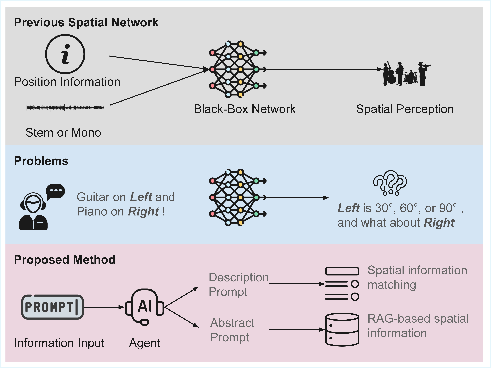
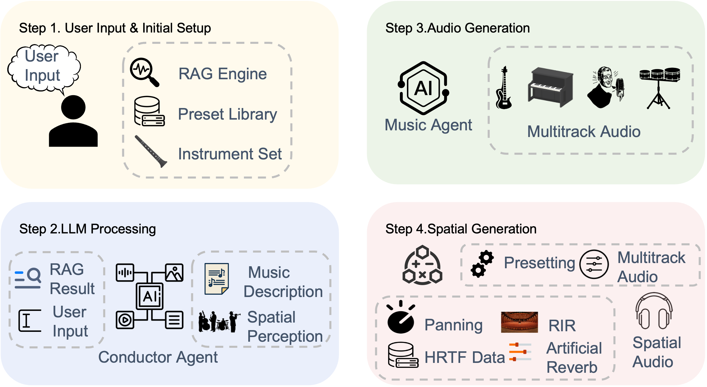

Project Demo Page (Scaffolding)
This is the scaffold with figures only. Audio demos will be added later.
Overview
This page introduces STASE with a high-level comparison and an overall method walkthrough. Use the navigation to jump to each section.
High-level Comparison
High-level comparison between previous spatial networks and the proposed STASE framework.
Method
Overall Method
- Input preparation: natural-language instruction and optional references.
- Prompt structuring: convert input into description and abstract prompts to control modules.
- Spatial knowledge retrieval (RAG): fetch prior cues (e.g., room, direction, HRIR/BRIR) and map them to constraints.
- Source processing: separate or manage stems; estimate spatial attributes such as direction, distance and reverberation.
- Rendering and mixing: spatialize each stem with consistent acoustics and mix them into a coherent scene.
- Output: deliver the final spatial audio mix.
The overall workflow of the STASE framework. Natural language input is progressively structured into description and abstract prompts, enriched by retrieval-augmented spatial knowledge (RAG). These prompts steer modules for source extraction, spatial attribute estimation (e.g., direction, distance, room cues), and rendering. The pipeline finally mixes all rendered stems to produce a coherent spatial audio result.
Concretely, STASE couples: (1) language understanding to form controllable prompts; (2) a spatial information matcher that aligns text with symbolic/learned priors; (3) a render-and-mix stage that positions sources in space with consistent acoustics.
